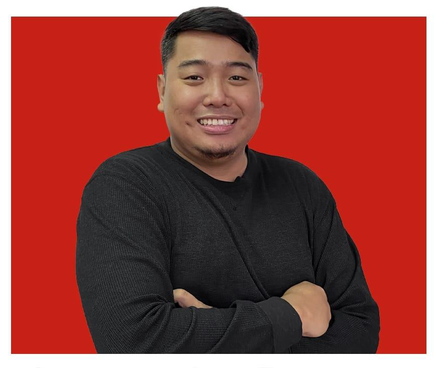

Marc Gester M. Torres
Address: #5 Parnaso Extension Parang Marikina City Philippines
Contact: +63 927 5481 061
Email: marcgestert28@gmail.com
Objectives
Passionate and driven individual seeking to leverage my skills in web development to contribute effectively to innovative projects.
With a strong foundation in programming languages such as HTML, CSS, JavaScript, and experience with various frameworks and tools,
I aim to create dynamic and user-friendly web solutions that meet and exceed client expectations. Dedicated to continuous learning
and staying updated with industry trends, I am eager to collaborate with a dynamic team to create impactful digital experiences.
Work Experience
March 8, 2023 to Present
IT Specialist (Acting Officer)
Red Door Animation Inc.
-
Maintains and administer the company’s technical system including
computer units (peripherals, parts and builds, and deployment).
-
Manages company’s software accounts, business apps and partnerships
(Adobe Products, Toon Boom Harmony, Microsoft, MAC OS ,Zoom,
Slack, Jetstream, Animagic, etc.).
-
Performs data backup for company’s daily and project completion.
-
Diagnose, troubleshoot and provide best resolution for every hardware,
software, and network or system problems reported by the users.
-
Plan, coordinate, and implement network security measures to ensure
client’s data and projects.
-
Recommend changes to improve systems and network configurations,
and determine hardware or software requirements related to such
changes.
-
Set up Fortigate Firewall and Configure VPN using FortiClient.
-
ISP WAN Configuration to Firewall and Create a Policy for the users.
-
Re-cabling of Network structure.(CAT6 for Server Set-up)
-
Set up Dell server and Synology and configure using LDAP.
-
Installs security devices such as CCTV and alarms within the company’s
vicinity
-
Updates website and social media content.
-
Installs, maintain, and perform troubleshooting across a wide variety of
firewall and network technologies (LAN and WAN) Connects with client
support to provide and learn the best solutions for reported technical
problems.
February 14, 2022 to March 24, 2023
IT tech. Support
Drawsteel + BIM (Detailing)
-
Provide technical support to all PC and system users.
-
Provide first level support from IT Servers or peripherals/implemented system.
-
Maintain of all PC (desktop/laptop) against trouble/failures.
-
Monitoring of installed software's
-
Programming activities for in-house systems implementation.
-
Prepare/define hardware and software specifications before purchasing
-
Analyzing acquired systems before implementing.
-
Ensuring system/database backup and recovery activities.
-
Maintain users PC/System accounts.
-
Controlling of computer peripherals and items/stock.
-
Creates the look, layout and features of the company website
-
Knowledgeable on using Photoshop, adobe illustrator and adobe acrobat.
-
Knowledgeable on Autocad using, Autocad LT 2019/2017
-
Responsible in Installing and Configuring software needed in the
operations, like Windows 10 pro license, Microsoft Word, Excel,
AutoCAD, Bluebeam, PDF viewer, Adobe Acrobat, Jobber, etc. that is
using for Engineering and architectural design.
-
Monitoring and checking if the LAN/WAN connection is properly
stable for the company operation.
-
Execute repairs and part replacements in maintenance of desktops.
-
IP phones and printers and CCTV to make sure its properly working.
TRAININGS AND SEMINARS ATTENDED
PERSONAL DATA
Place of Birth: Quezon City Philippines
Birthday : March 28, 1993
Age : 31
Status : Married
Height : 5’8
Weight : 89kg
Citizenship : Filipino
Religion : Catholic
Language : English, Filipino and Basic Cantonese
EDUCATIONAL ATTAINMENT